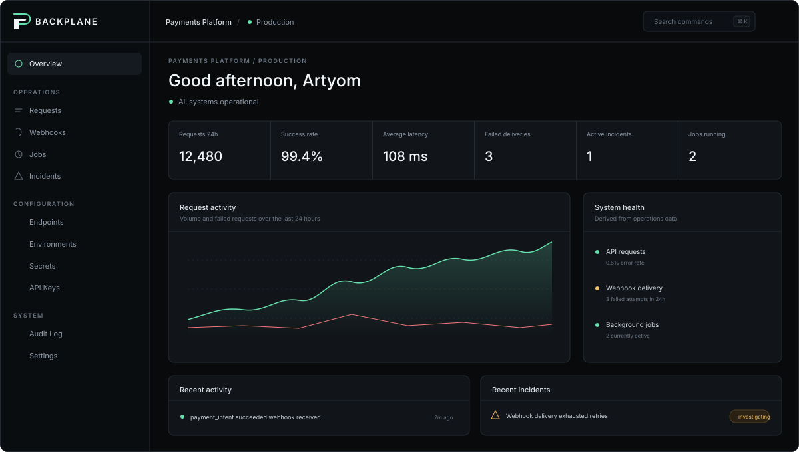

Backplane
Operations control plane for APIs, webhooks and background automation.
- Problem
- Integration failures are scattered across logs, queues and vendor tools.
- What I built
- A shared workspace to inspect delivery, operate jobs and resolve incidents.
Engineering focus
- Multi-tenancy, RBAC, secret vault and scoped API keys
- Webhook retries, replay and dead-letter handling
- Background jobs and scheduling
- Incidents, audit logs, Prometheus metrics and live activity

operateAPIs & jobs
investigateIncidents & audit